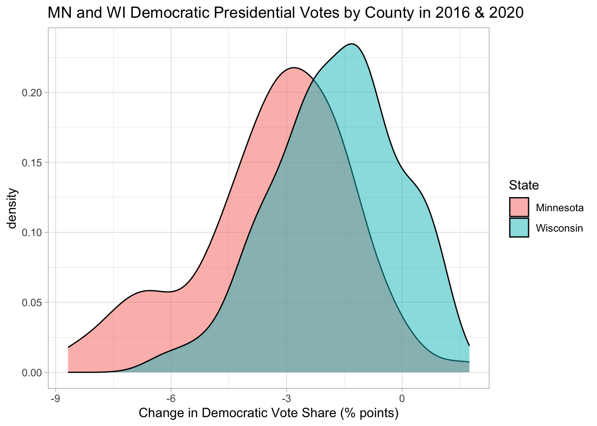

state_name state_abbr historical county_name county_fips total_votes_20
1 Alabama AL red Autauga County 1001 27770
2 Alabama AL red Baldwin County 1003 109679
3 Alabama AL red Barbour County 1005 10518
4 Alabama AL red Bibb County 1007 9595
5 Alabama AL red Blount County 1009 27588
6 Alabama AL red Bullock County 1011 4613
repub_pct_20 dem_pct_20 winner_20 total_votes_16 repub_pct_16 dem_pct_16
1 71.44 27.02 repub 24661 73.44 23.96
2 76.17 22.41 repub 94090 77.35 19.57
3 53.45 45.79 repub 10390 52.27 46.66
4 78.43 20.70 repub 8748 76.97 21.42
5 89.57 9.57 repub 25384 89.85 8.47
6 24.84 74.70 dem 4701 24.23 75.09
winner_16 total_votes_12 repub_pct_12 dem_pct_12 winner_12 total_population
1 repub 23909 72.63 26.58 repub 54907
2 repub 84988 77.39 21.57 repub 187114
3 repub 11459 48.34 51.25 dem 27321
4 repub 8391 73.07 26.22 repub 22754
5 repub 23980 86.49 12.35 repub 57623
6 dem 5318 23.51 76.31 dem 10746
percent_white percent_black percent_asian percent_hispanic per_capita_income
1 76 18 1 2 24571
2 83 9 1 4 26766
3 46 46 0 5 16829
4 75 22 0 2 17427
5 88 1 0 8 20730
6 22 71 0 6 18628
median_rent median_age
1 668 37.5
2 693 41.5
3 382 38.3
4 351 39.4
5 403 39.6
6 276 39.6
Exercise 1: select Practice
# Define elections_smallelections_small <- elections |>select(state_name, county_name, total_votes_20, repub_pct_20, dem_pct_20, total_votes_16, dem_pct_16)# Check out the first 6 rows to confirm your code did what you think it did!head(elections_small)
# What does this do?elections_small |>filter(state_name %in%c("Hawaii", "Delaware"))
state_name county_name total_votes_20 repub_pct_20 dem_pct_20
1 Delaware Kent County 87025 47.12 51.19
2 Delaware New Castle County 287633 30.72 67.81
3 Delaware Sussex County 129352 55.07 43.82
4 Hawaii Hawaii County 87814 30.63 66.88
5 Hawaii Honolulu County 382114 35.66 62.51
6 Hawaii Kauai County 33497 34.58 63.36
7 Hawaii Maui County 71044 31.14 66.59
total_votes_16 dem_pct_16
1 74253 44.91
2 261468 62.30
3 105814 37.17
4 64865 63.61
5 285683 61.48
6 26335 62.49
7 51942 64.45
# Keep only data on counties where the Republican got MORE THAN 93.97% of the vote in 2020elections_small |>filter(repub_pct_20 >"93.97")
state_name county_name total_votes_20 repub_pct_20 dem_pct_20
1 Texas Borden County 416 95.43 3.85
2 Texas King County 159 94.97 5.03
3 Texas Roberts County 550 96.18 3.09
total_votes_16 dem_pct_16
1 365 8.49
2 159 3.14
3 550 3.64
# THINK: What variable is relevant here?
# Keep only data on counties where the Republican got AT LEAST 93.97% of the vote in 2020elections_small |>filter(repub_pct_20 >=93.97)
state_name county_name total_votes_20 repub_pct_20 dem_pct_20
1 Montana Garfield County 813 93.97 5.04
2 Texas Borden County 416 95.43 3.85
3 Texas King County 159 94.97 5.03
4 Texas Roberts County 550 96.18 3.09
total_votes_16 dem_pct_16
1 715 4.76
2 365 8.49
3 159 3.14
4 550 3.64
# This should have 1 more row (observation) than your answer above
# Keep only data on counties in Texas where the Democrat got more than 65% of the vote in 2020# Do this 2 ways.# Method 1: 2 filters with 1 condition eachelections_small |>filter(state_name =="Texas") |>filter(dem_pct_20 >65)
state_name county_name total_votes_20 repub_pct_20 dem_pct_20
1 Texas El Paso County 267215 31.56 66.66
2 Texas Presidio County 2217 32.52 65.99
3 Texas Travis County 610349 26.43 71.41
4 Texas Zavala County 4379 34.03 65.40
total_votes_16 dem_pct_16
1 210458 69.14
2 2203 66.18
3 462511 66.26
4 3390 77.67
state_name county_name total_votes_20 repub_pct_20 dem_pct_20
1 Texas El Paso County 267215 31.56 66.66
2 Texas Presidio County 2217 32.52 65.99
3 Texas Travis County 610349 26.43 71.41
4 Texas Zavala County 4379 34.03 65.40
total_votes_16 dem_pct_16
1 210458 69.14
2 2203 66.18
3 462511 66.26
4 3390 77.67
Exercise 3: arrange Demo
# Arrange the counties in elections_small from lowest to highest percentage of 2020 Republican support# Print out just the first 6 rowselections_small |>arrange(repub_pct_20) |>head()
state_name county_name total_votes_20 repub_pct_20
1 District of Columbia District of Columbia 344356 5.40
2 Maryland Prince George's County 424855 8.73
3 Maryland Baltimore city 237461 10.69
4 Virginia Petersburg city 14118 11.22
5 New York New York County 694904 12.26
6 California San Francisco County 443458 12.72
dem_pct_20 total_votes_16 dem_pct_16
1 92.15 280272 92.85
2 89.26 351091 89.33
3 87.28 208980 85.44
4 87.75 13717 87.52
5 86.78 591368 87.17
6 85.27 365295 85.53
# Arrange the counties in elections_small from highest to lowest percentage of 2020 Republican support# Print out just the first 6 rowselections_small |>arrange(desc(repub_pct_20)) |>head()
state_name county_name total_votes_20 repub_pct_20 dem_pct_20
1 Texas Roberts County 550 96.18 3.09
2 Texas Borden County 416 95.43 3.85
3 Texas King County 159 94.97 5.03
4 Montana Garfield County 813 93.97 5.04
5 Texas Glasscock County 653 93.57 5.97
6 Nebraska Grant County 402 93.28 4.98
total_votes_16 dem_pct_16
1 550 3.64
2 365 8.49
3 159 3.14
4 715 4.76
5 602 5.65
6 394 5.08
Exercise 4: mutate Demo
Part a
# What did this code do?elections_small |>mutate(diff_20 = repub_pct_20 - dem_pct_20) |>head()
# You try# Define a variable that calculates the change in Dem support in 2020 vs 2016elections_small |>mutate(dem_pct_change = dem_pct_16 - dem_pct_20) |>head()
# You try# Define a variable that determines whether the Dem support was higher in 2020 than in 2016 (TRUE/FALSE)elections_small |>mutate(dem_gains_20 = dem_pct_20 > dem_pct_16) |>head()
state_name county_name total_votes_20 repub_pct_20 dem_pct_20
1 Wisconsin Milwaukee County 458971 29.27 69.13
2 Wisconsin Dane County 344791 22.85 75.46
3 Wisconsin Rock County 85360 43.51 54.66
4 Wisconsin La Crosse County 67884 42.25 55.75
5 Wisconsin Eau Claire County 58275 43.49 54.26
6 Wisconsin Portage County 40603 47.53 50.31
total_votes_16 dem_pct_16
1 434970 66.44
2 304729 71.38
3 75043 52.42
4 62785 51.61
5 54080 50.43
6 38123 48.59
# Now try it. Change the order of filter and arrange below.elections_small |>arrange(desc(total_votes_20)) |>filter(state_name =="Wisconsin", repub_pct_20 < dem_pct_20) |>head()
state_name county_name total_votes_20 repub_pct_20 dem_pct_20
1 Wisconsin Milwaukee County 458971 29.27 69.13
2 Wisconsin Dane County 344791 22.85 75.46
3 Wisconsin Rock County 85360 43.51 54.66
4 Wisconsin La Crosse County 67884 42.25 55.75
5 Wisconsin Eau Claire County 58275 43.49 54.26
6 Wisconsin Portage County 40603 47.53 50.31
total_votes_16 dem_pct_16
1 434970 66.44
2 304729 71.38
3 75043 52.42
4 62785 51.61
5 54080 50.43
6 38123 48.59
county_name repub_pct_20 dem_pct_20 repub_win_20
1 Kent County 47.12 51.19 FALSE
2 New Castle County 30.72 67.81 FALSE
3 Sussex County 55.07 43.82 TRUE
# Now try it. Change the order of mutate and select below.# elections_small |># filter(state_name == "Delaware") |># select(county_name, repub_pct_20, dem_pct_20, repub_win_20)|># mutate(repub_win_20 = repub_pct_20 > dem_pct_20)
Exercise 6: DIY Pipe Series
Part a
# Show just the counties in Minnesota and their Democratic 2020 vote percentage, from highest to lowest.elections_small |>filter(state_name =="Minnesota") |>select(county_name, dem_pct_20) |>arrange(desc(dem_pct_20))
county_name dem_pct_20
1 Ramsey County 71.50
2 Hennepin County 70.46
3 Cook County 65.58
4 St. Louis County 56.64
5 Dakota County 55.73
6 Olmsted County 54.16
7 Washington County 53.46
8 Blue Earth County 50.84
9 Clay County 50.74
10 Lake County 50.64
11 Nicollet County 50.31
12 Carlton County 49.58
13 Winona County 49.07
14 Rice County 48.76
15 Mahnomen County 48.26
16 Anoka County 47.79
17 Beltrami County 47.24
18 Carver County 46.37
19 Mower County 46.00
20 Scott County 45.52
21 Houston County 42.42
22 Goodhue County 41.23
23 Freeborn County 40.96
24 Norman County 40.80
25 Itasca County 40.61
26 Koochiching County 38.41
27 Watonwan County 38.20
28 Kittson County 38.12
29 Stevens County 37.80
30 Stearns County 37.58
31 Fillmore County 37.48
32 Steele County 37.47
33 Kandiyohi County 36.12
34 Aitkin County 35.98
35 Lyon County 35.94
36 Lac qui Parle County 35.79
37 Wabasha County 35.78
38 Grant County 35.58
39 Traverse County 35.46
40 Big Stone County 35.41
41 Pennington County 35.29
42 Pope County 35.27
43 Polk County 34.88
44 Cass County 34.68
45 Wright County 34.49
46 Hubbard County 34.42
47 Swift County 34.35
48 Crow Wing County 34.17
49 Chisago County 34.15
50 Becker County 33.96
51 Pine County 33.87
52 Le Sueur County 33.73
53 Chippewa County 33.67
54 Nobles County 33.65
55 Waseca County 33.65
56 Dodge County 33.47
57 Otter Tail County 32.85
58 Benton County 32.70
59 Douglas County 32.56
60 Brown County 32.48
61 Sherburne County 32.48
62 Faribault County 31.98
63 Red Lake County 31.47
64 Renville County 30.71
65 McLeod County 30.64
66 Yellow Medicine County 30.54
67 Lincoln County 30.08
68 Cottonwood County 30.03
69 Kanabec County 30.02
70 Martin County 30.02
71 Jackson County 29.99
72 Mille Lacs County 29.98
73 Wilkin County 29.91
74 Rock County 29.69
75 Murray County 29.60
76 Isanti County 29.45
77 Sibley County 28.60
78 Meeker County 28.58
79 Redwood County 28.43
80 Lake of the Woods County 27.87
81 Clearwater County 26.76
82 Pipestone County 26.44
83 Wadena County 26.35
84 Roseau County 25.98
85 Marshall County 25.33
86 Todd County 24.79
87 Morrison County 22.33
Part b
# Create a new dataset named mn_wi that sorts the counties in Minnesota and Wisconsin from lowest to highest in terms of the change in Democratic vote percentage in 2020 vs 2016. This dataset should include the following variables (and only these variables): state_name, county_name, dem_pct_20, dem_pct_16, and a variable measuring the change in Democratic vote percentage in 2020 vs 2016.# Define the dataset# Only store the results once you're confident that they're correctmn_wi <- elections |>filter(state_name %in%c("Minnesota", "Wisconsin")) |>mutate(dem_pct_change = dem_pct_16 - dem_pct_20) |>select(state_name, county_name, dem_pct_20, dem_pct_16, dem_pct_change) |>arrange(dem_pct_20)
Part c
# Construct and discuss a plot of the county-level change in Democratic vote percent in 2020 vs 2016, and how this differs between Minnesota and Wisconsin.ggplot(mn_wi, aes(x = dem_pct_change, fill = state_name)) +geom_density(alpha =0.5) +theme_light() +labs(x ="Change in Democratic Vote Share (% points)", fill ="State", title ="MN and WI Democratic Presidential Votes by County in 2016 & 2020")

Exercise 7: summarize Demo
# What does this do?elections_small |>summarize(median(repub_pct_20))
median(repub_pct_20)
1 68.29
# What does this do?elections_small |>summarize(median_repub =median(repub_pct_20))
median_repub
1 68.29
# What does this do?elections_small |>summarize(median_repub =median(repub_pct_20), total_votes =sum(total_votes_20))
# Check out the structure before and after group_byelections_small |>class()
[1] "data.frame"
elections_small |>group_by(state_name) |>class()
[1] "grouped_df" "tbl_df" "tbl" "data.frame"
# What does this do?# (What if we didn't use group_by?)elections_small |>group_by(state_name) |>summarize(median_repub =median(repub_pct_20), total_votes =sum(total_votes_20))
# A tibble: 50 × 3
state_name median_repub total_votes
<chr> <dbl> <int>
1 Alabama 70.6 2323304
2 Arizona 57.9 3387326
3 Arkansas 72.1 1219069
4 California 44.8 17495906
5 Colorado 56.2 3256953
6 Connecticut 41.0 1824280
7 Delaware 47.1 504010
8 District of Columbia 5.4 344356
9 Florida 64.6 11067456
10 Georgia 68 4997716
# ℹ 40 more rows
Exercise 9: DIY
# Sort the *states* from the most to least total votes cast in 2020elections_small |>group_by(state_name) |>summarize(median_repub =median(repub_pct_20), total_votes =sum(total_votes_20)) |>arrange(desc(total_votes))
# A tibble: 50 × 3
state_name median_repub total_votes
<chr> <dbl> <int>
1 California 44.8 17495906
2 Texas 78.6 11317911
3 Florida 64.6 11067456
4 New York 53.7 8616205
5 Pennsylvania 66.9 6925255
6 Illinois 68.8 6038850
7 Ohio 70.1 5922202
8 Michigan 62.1 5539302
9 North Carolina 59.8 5524801
10 Georgia 68 4997716
# ℹ 40 more rows
# In 2020, what were the total number of votes for the Democratic candidate and the total number of votes for the Republican candidate in each *state*?elections_small |>mutate(repub_votes =round(total_votes_20 * repub_pct_20/100),dem_votes =round(total_votes_20 * dem_pct_20/100) ) |>group_by(state_name) |>summarise(total_dem =sum(dem_votes), total_repub =sum(repub_votes))
# A tibble: 50 × 3
state_name total_dem total_repub
<chr> <dbl> <dbl>
1 Alabama 849664 1441155
2 Arizona 1672127 1661671
3 Arkansas 423919 760641
4 California 11109642 6006031
5 Colorado 1804393 1364627
6 Connecticut 1080677 715315
7 Delaware 296274 200601
8 District of Columbia 317324 18595
9 Florida 5297131 5668600
10 Georgia 2473661 2461869
# ℹ 40 more rows
# What states did the Democratic candidate win in 2020?elections_small |>mutate(repub_votes =round(total_votes_20 * repub_pct_20/100),dem_votes =round(total_votes_20 * dem_pct_20/100) ) |>group_by(state_name) |>summarise(total_dem =sum(dem_votes), total_repub =sum(repub_votes)) |>mutate(dem_win_20 = total_dem > total_repub)
---title: "Wrangling"format: htmlnumber-sections: false---```{r}# Load tidyverse & datalibrary(tidyverse)elections <-read.csv("https://mac-stat.github.io/data/election_2020_county.csv")head(elections)```## Exercise 1: `select` Practice```{r}# Define elections_smallelections_small <- elections |>select(state_name, county_name, total_votes_20, repub_pct_20, dem_pct_20, total_votes_16, dem_pct_16)# Check out the first 6 rows to confirm your code did what you think it did!head(elections_small)```## Exercise 2: `filter` Demo```{r}# Keep only data on counties in Hawaiielections_small |>filter(state_name =="Hawaii")# Checkhead(elections_small)``````{r}# What does this do?elections_small |>filter(state_name %in%c("Hawaii", "Delaware"))``````{r}# Keep only data on counties where the Republican got MORE THAN 93.97% of the vote in 2020elections_small |>filter(repub_pct_20 >"93.97")# THINK: What variable is relevant here?``````{r}# Keep only data on counties where the Republican got AT LEAST 93.97% of the vote in 2020elections_small |>filter(repub_pct_20 >=93.97)# This should have 1 more row (observation) than your answer above``````{r}# Keep only data on counties in Texas where the Democrat got more than 65% of the vote in 2020# Do this 2 ways.# Method 1: 2 filters with 1 condition eachelections_small |>filter(state_name =="Texas") |>filter(dem_pct_20 >65)# Method 2: 1 filter with 2 conditionselections_small |>filter(state_name =="Texas", dem_pct_20 >65)```## Exercise 3: `arrange` Demo```{r}# Arrange the counties in elections_small from lowest to highest percentage of 2020 Republican support# Print out just the first 6 rowselections_small |>arrange(repub_pct_20) |>head()``````{r}# Arrange the counties in elections_small from highest to lowest percentage of 2020 Republican support# Print out just the first 6 rowselections_small |>arrange(desc(repub_pct_20)) |>head()```## Exercise 4: `mutate` Demo### Part a```{r}# What did this code do?elections_small |>mutate(diff_20 = repub_pct_20 - dem_pct_20) |>head()``````{r}# What did this code do?elections_small |>mutate(repub_votes_20 =round(total_votes_20 * repub_pct_20/100)) |>head()``````{r}# What did this code do?elections_small |>mutate(repub_win_20 = repub_pct_20 > dem_pct_20) |>head()```### Part b```{r}# You try# Define a variable that calculates the change in Dem support in 2020 vs 2016elections_small |>mutate(dem_pct_change = dem_pct_16 - dem_pct_20) |>head()``````{r}# You try# Define a variable that determines whether the Dem support was higher in 2020 than in 2016 (TRUE/FALSE)elections_small |>mutate(dem_gains_20 = dem_pct_20 > dem_pct_16) |>head()```## Exercise 5: Pipe Series```{r}elections_small |>filter(state_name =="Wisconsin", repub_pct_20 < dem_pct_20) |>arrange(desc(total_votes_20)) |>head()``````{r}# Now try it. Change the order of filter and arrange below.elections_small |>arrange(desc(total_votes_20)) |>filter(state_name =="Wisconsin", repub_pct_20 < dem_pct_20) |>head()``````{r}elections_small |>filter(state_name =="Delaware") |>mutate(repub_win_20 = repub_pct_20 > dem_pct_20) |>select(county_name, repub_pct_20, dem_pct_20, repub_win_20)``````{r}# Now try it. Change the order of mutate and select below.# elections_small |># filter(state_name == "Delaware") |># select(county_name, repub_pct_20, dem_pct_20, repub_win_20)|># mutate(repub_win_20 = repub_pct_20 > dem_pct_20) ```## Exercise 6: DIY Pipe Series### Part a```{r}# Show just the counties in Minnesota and their Democratic 2020 vote percentage, from highest to lowest.elections_small |>filter(state_name =="Minnesota") |>select(county_name, dem_pct_20) |>arrange(desc(dem_pct_20))```### Part b```{r}# Create a new dataset named mn_wi that sorts the counties in Minnesota and Wisconsin from lowest to highest in terms of the change in Democratic vote percentage in 2020 vs 2016. This dataset should include the following variables (and only these variables): state_name, county_name, dem_pct_20, dem_pct_16, and a variable measuring the change in Democratic vote percentage in 2020 vs 2016.# Define the dataset# Only store the results once you're confident that they're correctmn_wi <- elections |>filter(state_name %in%c("Minnesota", "Wisconsin")) |>mutate(dem_pct_change = dem_pct_16 - dem_pct_20) |>select(state_name, county_name, dem_pct_20, dem_pct_16, dem_pct_change) |>arrange(dem_pct_20)```## Part c```{r}# Construct and discuss a plot of the county-level change in Democratic vote percent in 2020 vs 2016, and how this differs between Minnesota and Wisconsin.ggplot(mn_wi, aes(x = dem_pct_change, fill = state_name)) +geom_density(alpha =0.5) +theme_light() +labs(x ="Change in Democratic Vote Share (% points)", fill ="State", title ="MN and WI Democratic Presidential Votes by County in 2016 & 2020")```## Exercise 7: `summarize` Demo```{r}# What does this do?elections_small |>summarize(median(repub_pct_20))``````{r}# What does this do?elections_small |>summarize(median_repub =median(repub_pct_20))``````{r}# What does this do?elections_small |>summarize(median_repub =median(repub_pct_20), total_votes =sum(total_votes_20))```## Exercise 8: `summarize` + `group_by` demo```{r}elections_small |>group_by(state_name)``````{r}# Check out the structure before and after group_byelections_small |>class()elections_small |>group_by(state_name) |>class()``````{r}# What does this do?# (What if we didn't use group_by?)elections_small |>group_by(state_name) |>summarize(median_repub =median(repub_pct_20), total_votes =sum(total_votes_20))```## Exercise 9: DIY```{r}# Sort the *states* from the most to least total votes cast in 2020elections_small |>group_by(state_name) |>summarize(median_repub =median(repub_pct_20), total_votes =sum(total_votes_20)) |>arrange(desc(total_votes))``````{r}# In 2020, what were the total number of votes for the Democratic candidate and the total number of votes for the Republican candidate in each *state*?elections_small |>mutate(repub_votes =round(total_votes_20 * repub_pct_20/100),dem_votes =round(total_votes_20 * dem_pct_20/100) ) |>group_by(state_name) |>summarise(total_dem =sum(dem_votes), total_repub =sum(repub_votes))``````{r}# What states did the Democratic candidate win in 2020?elections_small |>mutate(repub_votes =round(total_votes_20 * repub_pct_20/100),dem_votes =round(total_votes_20 * dem_pct_20/100) ) |>group_by(state_name) |>summarise(total_dem =sum(dem_votes), total_repub =sum(repub_votes)) |>mutate(dem_win_20 = total_dem > total_repub)```